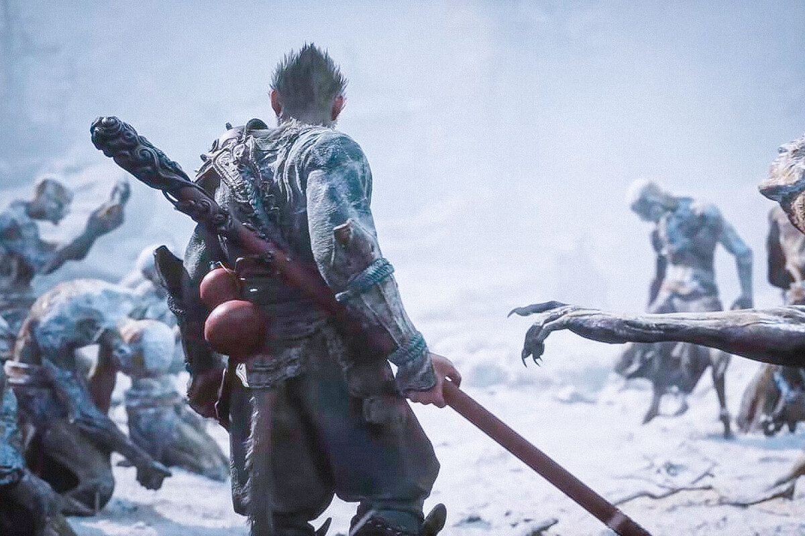

Estos son los 20 juegos de mundo abierto más prometedores de 2024 y más allá
El género de los juegos en mundo abierto sigue creciendo y estos son los mejores exponentes que veremos próximamente
2024 y en general los próximos años son especialmente ilusionantes para el género de los mundos abiertos. Estos títulos están demostrando grandes cosas en el presente gracias al potencial de la nueva generación de hardware, y es de esperar que durante los próximos meses se saque aún más provecho de máquinas como PlayStation 5 o Xbox Series. A este respecto, queríamos confeccionar un listado con los videojuegos más ilusionantes, los mundos abiertos más llamativos y que nos generan una mayor expectación. La mayor parte de títulos aparecerán durante los próximos meses, pero ya sabéis, hay un montón de títulos todavía sin fecha confirmada, así que es probable que se vayan hasta 2025 (o puede que más allá, que nunca se sabe). Por eso hemos incorporado a nuestra selección a juegos como GTA VI, del cual conocimos detalles hace muy pocas semanas. Y es solo la punta del iceberg, porque creednos que hay muchas y muy buenas propuestas dentro de un género con un potencial enorme para evolucionar y sorprendernos. Por ejemplo, hablamos de estrellas como Dragon's Dogma 2, Star Wars Outlaws y por supuesto Death Stranding 2, proyectos de enorme presupuesto y que van a poner sobre la mesa potentes innovaciones que pueden cambiar para siempre nuestra concepción sobre el género. Pero no nos entretenemos más y os dejamos que disfrutéis de nuestro vídeo, aunque no sin antes preguntaros cuáles de estos videojuegos de mundo abierto esperáis más, o si acaso tenéis en seguimiento alguno adicional. ¡Decidnos en los comentarios!